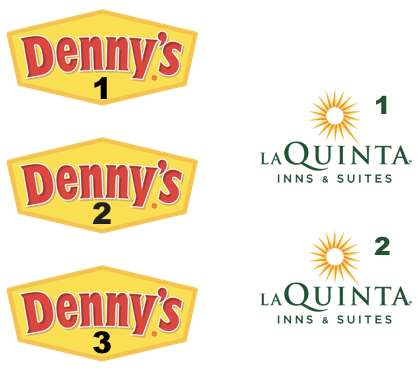
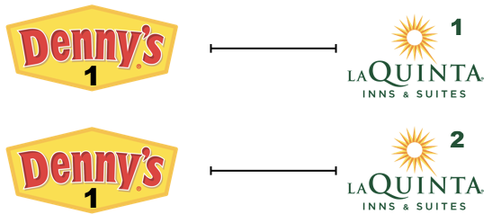

7 Lab 05 - La Quinta is Spanish for next to Denny’s, Pt. 2"
7.1 “Wrangling spatial data”

In this lab we revisit the Denny’s and La Quinta Inn and Suites data we visualized in the previous lab.
7.2 Getting started
Go to the course organization on GitHub.
Find your lab repo.
In the repo, click on the green Clone or download button, select Use HTTPS (this might already be selected by default, and if it is, you’ll see the text Clone with HTTPS as in the image below). Click on the clipboard icon to copy the repo URL.
Go to RStudio Cloud and into the course workspace. Create a New Project from Git Repo. You will need to click on the down arrow next to the New Project button to see this option.
Copy and paste the URL of your assignment repo into the dialog box:
Hit OK, and you’re good to go!
7.2.1 Packages
In this lab we will use the tidyverse and dsbox packages.
7.2.2 Housekeeping
7.2.2.1 Password caching
If you would like your git password cached for a week for this project, type the following in the Terminal:
7.2.2.2 Project name
Currently your project is called Untitled Project. Update the name of your project to be “Lab 04 - Wrangling spatial data”.
7.3 Warm up
Pick one team member to complete the steps in this section while the others contribute to the discussion but do not actually touch the files on their computer.
Before we introduce the data, let’s warm up with some simple exercises.
7.3.1 YAML
Open the R Markdown (Rmd) file in your project, change the author name to your team name, and knit the document.
7.3.2 Commiting and pushing changes:
- Go to the Git pane in your RStudio.
- View the Diff and confirm that you are happy with the changes.
- Add a commit message like “Update team name” in the Commit message box and hit Commit.
- Click on Push. This will prompt a dialogue box where you first need to enter your user name, and then your password.
7.3.3 Pulling changes
Now, the remaining team members who have not been concurrently making these changes on their projects should click on the Pull button in their Git pane and observe that the changes are now reflected on their projects as well.
7.4 The data
The datasets we’ll use are called dennys and laquinta from the dsbox package.
7.5 Exercises
- Filter the Denny’s dataframe for Alaska (AK) and save the result as
dn_ak. How many Denny’s locations are there in Alaska?
- Filter the La Quinta dataframe for Alaska (AK) and save the result as
lq_ak. How many La Quinta locations are there in Alaska?
Next we’ll calculate the distance between all Denny’s and all La Quinta locations in Alaska. Let’s take this step by step:
Step 1: There are 3 Denny’s and 2 La Quinta locations in Alaska. (If you answered differently above, you might want to recheck your answers.)

Step 2: Let’s focus on the first Denny’s location. We’ll need to calculate two distances for it: (1) distance between Denny’s 1 and La Quinta 1 and (2) distance between Denny’s 1 and La Quinta (2).

Step 3: Now let’s consider all Denny’s locations.

- How many pairings are there between all Denny’s and all La Quinta locations in Alaska, i.e. how many distances do we need to calculate between the locations of these establishments in Alaska?
In order to calculate these distances we need to first restructure our data to pair the Denny’s and La Quinta locations. To do so, we will join the two data frames. We have six join options in R. Each of these join functions take at least three arguments: x, y, and by.
xandyare data frames to joinbyis the variable(s) to join by
Four of these join functions combine variables from the two data frames:
These are called **mutating joins**.inner_join(): return all rows fromxwhere there are matching values iny, and all columns fromxandy.left_join(): return all rows fromx, and all columns fromxandy. Rows in x with no match in y will have NA values in the new columns.right_join(): return all rows fromy, and all columns fromxandy. Rows in y with no match in x will have NA values in the new columns.full_join(): return all rows and all columns from bothxandy. Where there are not matching values, returns NA for the one missing.
And the other two join functions only keep cases from the left-hand data frame,
and are called filtering joins. We’ll learn about these another time but
you can find out more about the join functions in the help files for any one
of them, e.g. ?full_join.
In practice we mostly use mutating joins. In this case we want to keep all
rows and columns from both dn_ak and lq_ak data frames. So we will use
a full_join.
Full join of Denny’s and La Quinta locations in AK
Let’s join the data on Denny’s and La Quinta locations in Alaska, and take a look at what it looks like:
- How many observations are in the joined
dn_lq_akdata frame? What are the names of the variables in this data frame.
.x in the variable names means the variable comes from the x data frame
(the first argument in the full_join call, i.e. dn_ak), and .y means
the variable comes from the y data frame. These varibles are renamed to
include .x and .y because the two data frames have the same variables
and it’s not possible to have two variables in a data frame with the exact
same name.
Now that we have the data in the format we wanted, all that is left is to calculate the distances between the pairs.
- What function from the tidyverse do we use the add a new variable to a data frame while keeping the existing variables?
One way of calculating the distance between any two points on the earth is to use the Haversine distance formula. This formula takes into account the fact that the earth is not flat, but instead spherical.
This function is not available in R, but we have it saved in a file called haversine.R that we can load and then use:
haversine <- function(long1, lat1, long2, lat2, round = 3) {
# convert to radians
long1 = long1 * pi / 180
lat1 = lat1 * pi / 180
long2 = long2 * pi / 180
lat2 = lat2 * pi / 180
R = 6371 # Earth mean radius in km
a = sin((lat2 - lat1)/2)^2 + cos(lat1) * cos(lat2) * sin((long2 - long1)/2)^2
d = R * 2 * asin(sqrt(a))
return( round(d,round) ) # distance in km
}This function takes five arguments:
- Longitude and latitude of the first location
- Longitude and latitude of the second location
- A parameter by which to round the responses
Calculate the distances between all pairs of Denny’s and La Quinta locations and save this variable as
distance. Make sure to save this variable in THEdn_lq_akdata frame so that you can use it later.Calculate the minimum distance between a Denny’s and La Quinta for each Denny’s location. To do so we group by Denny’s locations and calculate a new variable that stores the information for the minimum distance.
Describe the distribution of the distances Denny’s and the nearest La Quinta locations in Alaska. Also include an appripriate visualization and relevant summary statistics.
Repeat the same analysis for North Carolina: (i) filter Denny’s and La Quinta Data Frames for NC, (ii) join these data frames to get a completelist of all possible pairings, (iii) calculate the distances between all possible pairings of Denny’s and La Quinta in NC, (iv) find the minimum distance between each Denny’s and La Quinta location, (v) visualize and describe the distribution of these shortest distances using appropriate summary statistics.
Repeat the same analysis for Texas.
Repeat the same analysis for a state of your choosing, different than the ones we covered so far.
Among the states you examined, where is Mitch Hedberg’s joke most likely to hold true? Explain your reasoning.